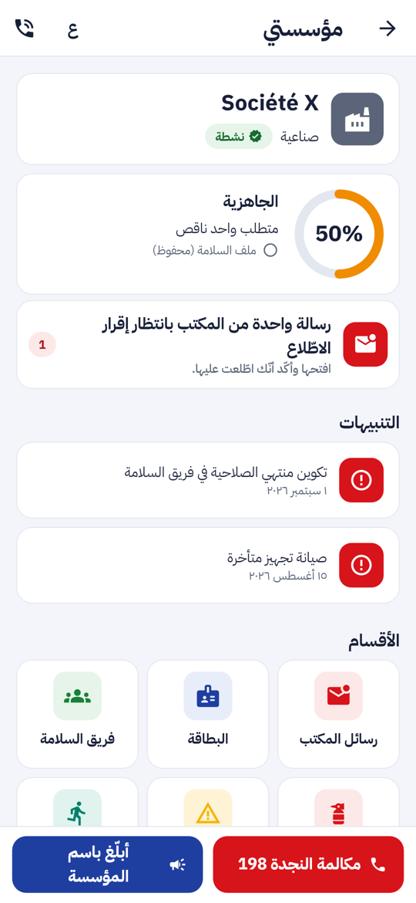
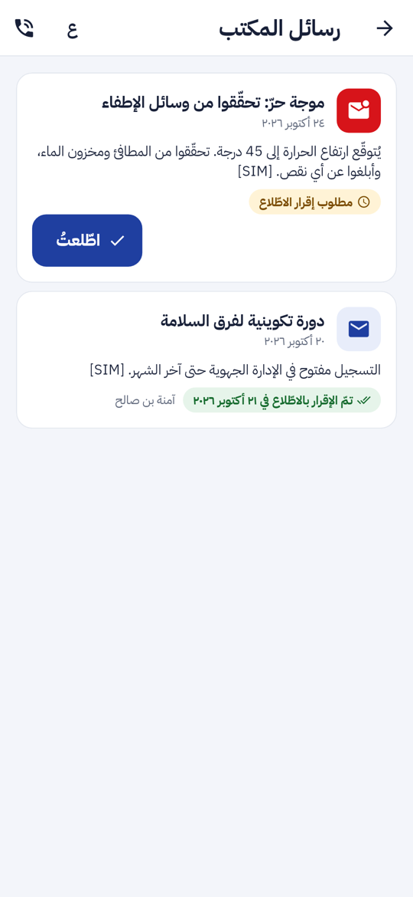
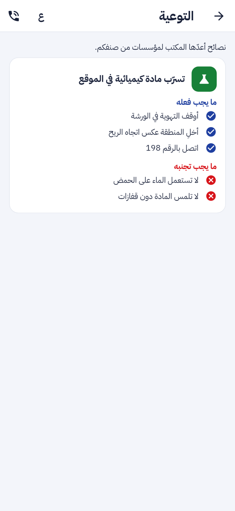
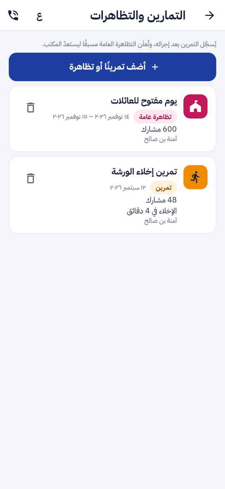
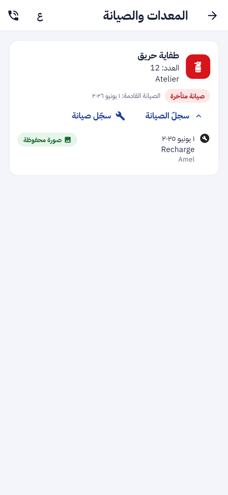
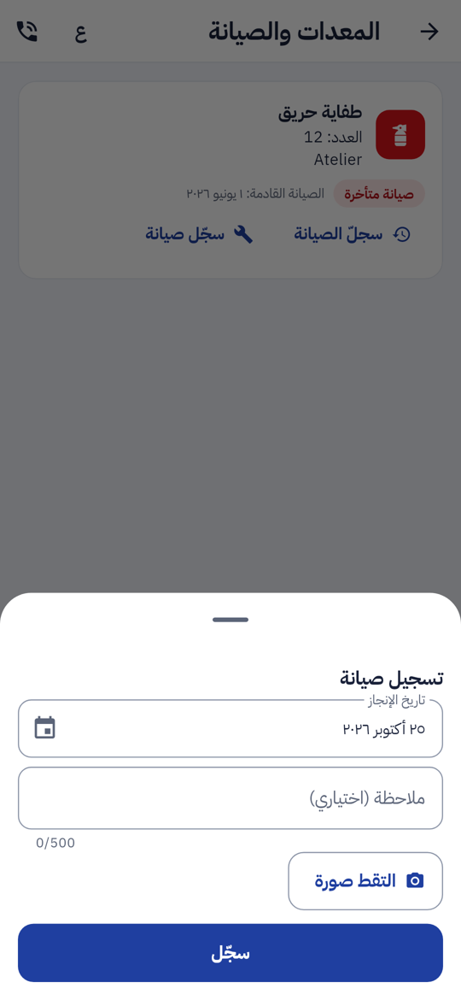
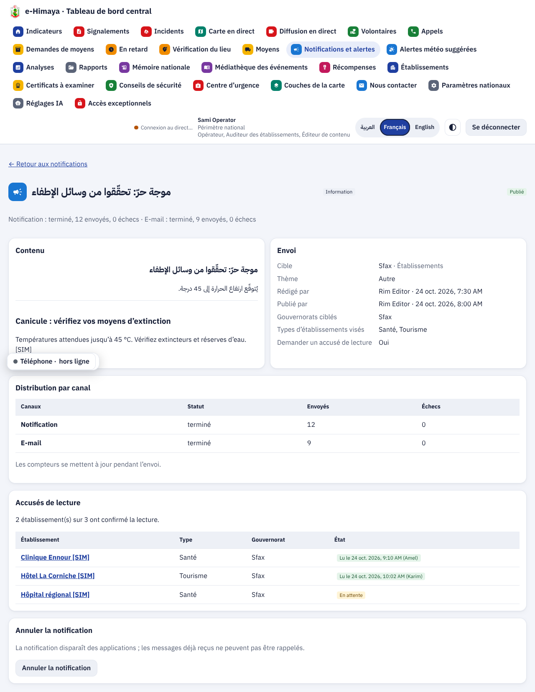
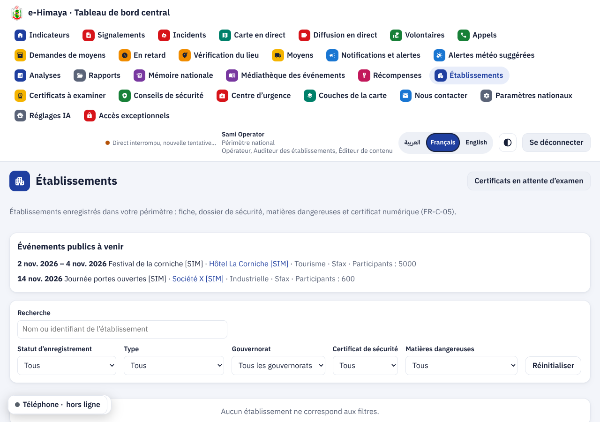

تقرير المرحلة P2b: فضاء المؤسسة في التطبيق (الإضافة 12، الجزء الثاني). تنبيهات الديوان الموجّهة حسب الصبغة مع تأكيد القراءة، التوعية حسب الصبغة، التمارين والتظاهرات العامة، وتسجيل الصيانة بصورة
maintenance_photo ثم تُرفع الصورة بعميل tus مع بصمة SHA-256، ثم يُسجَّل الحدث. السجلّ يظهر تحت كل معدّة في التطبيق، وفي صفحة المؤسسة باللوحة مع تنزيل الصورة.من اليمين: «مؤسستي» بعدّاد الرسائل، رسائل الديوان، التوعية، الأنشطة، المعدات، ورقة الصيانة. ثم لوحة القيادة: تأكيدات القراءة والتظاهرات القادمة. البيانات في اللقطات وهمية وتحمل [SIM].








| الجزء | ما أُنجز | التقدم |
|---|---|---|
| الخادم | الترحيل 0045، 10 عمليات جديدة، الاستهداف حسب الصبغة، تأكيد القراءة، التحقق من التواريخ والوثيقة | 100% |
| التطبيق | رسائل الديوان، التوعية، الأنشطة، ورقة الصيانة بالصورة وسجلّها | 100% |
| البوابة | رسائل الديوان في النظرة العامة، تبويب «الأنشطة» | 100% |
| لوحة القيادة | الاستهداف وتأكيدات القراءة، النصائح حسب الصبغة، سجلّ الصيانة والأنشطة، التظاهرات القادمة | 100% |
تقدم P2b: 100%. تقدم P2 كله (الإضافة 12): 100%.
| العملية | من يستعملها |
|---|---|
GET /orgs/{id}/messages | التطبيق والبوابة |
POST /orgs/{id}/messages/{mid}/ack | التطبيق والبوابة (المسؤول والمحرّر) |
GET /orgs/{id}/awareness | التطبيق |
GET · POST /orgs/{id}/activities و DELETE …/{aid} | التطبيق والبوابة |
GET · POST /orgs/{id}/equipment/{eid}/maintenance | التطبيق |
GET /staff/notifications/{mid}/acks | لوحة القيادة |
GET /staff/org-events | لوحة القيادة |
| الطبقة | جديدة في P2b | المجموع الآن |
|---|---|---|
| الخادم (pytest) | 4 سيناريوهات طويلة: الاستهداف حسب الصبغة وتأكيد القراءة، التوعية حسب الصبغة، التمارين والتظاهرات وقيود التواريخ، الصيانة بالصورة وصلاحيات الوثيقة | 840 |
| لوحة القيادة (vitest) | 5: الاستهداف، لوحة التأكيدات، النصائح حسب الصبغة، سجلّ الصيانة والأنشطة، التظاهرات القادمة | 443 |
| البوابة (vitest) | 5: رسائل الديوان و«اطّلعتُ»، العضو لا يؤكد، التحقق من التواريخ والمشاركين، التصريح والحذف، الأنشطة للقراءة فقط عند العضو | 97 |
| التطبيق (flutter test) | 4: فحص الصورة، الرفع مع البصمة، الرسائل والتوعية والتمارين، الصيانة بالصورة والعضو لا يسجّل | 425 |
الترحيل 0045 جُرّب صعودا ونزولا. التحليل الثابت نظيف: ruff و mypy للخادم، eslint و tsc للوحة والبوابة، flutter analyze و dart format للتطبيق. ملف OpenAPI ومخطط قاعدة البيانات وجدول التتبع محدّثة.
لا حزمة جديدة: الصورة تُلتقط بـ image_picker وتُرفع بعميل tus الموجود. القائمة الكاملة في versions.md.
0.12.0 (البناء 11) · Flutter 3.47.7 · 1
flutter build apkAlembic · 0045 · 1
maintenance_photocd services/api && uv run alembic upgrade headspec/: المتطلبات F-APP-135 إلى 138، F-POR-13 و 14، F-DSH-42 إلى 44.diagrams/: حالات استعمال المؤسسة (المحرّر والمشغّل)، صنف المؤسسة (الصيانة، النشاط، تأكيد القراءة)، ومخطط تسلسل جديد للصيانة بالصورة.presentation/.الإضافة 12 مكتملة. الخطوة التالية في خارطة الطريق: الشهادات والنفاذ.